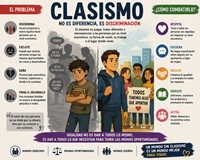
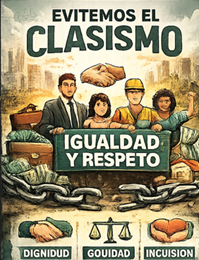
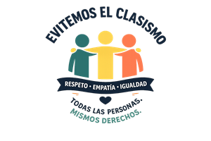

Ultimas noticias

El clasismo es una forma de discriminación y prejuicio basado en la clase social, es referido como los prejuicios y el trato injusto que enfrenta las personas debido a su estatus económico, riqueza percibida, nivel educativo u ocupación. El clasismo perpetúa la desigualdad previligiando a ciertas clases y perjudicandoo a otras, esto genera disparidades sitématicas y sociles, el clasismo ocurre cuando los inividuos o grpos reciben un tatro diferente debido a su origen socieconómico.
Un ejemplo común de clasismo se puede ver en el lugar de trabajo. Considere dos personas que solicitan el mismo puesto: una proviene de un entorno privilegiado, asistió a una universidad prestigiosa y tiene conexiones dentro de la empresa. El otro solicitante está igualmente calificado pero asistió a una universidad pública y carece de conexiones. Incluso si ambos candidatos tienen experiencia y habilidades similares, el candidato con un origen de clase social más alto podría ser visto más favorablemente debido a sesgos clasistas.
El origen del clasismo empieza por sus raíses en la estratificación social basada en la riqueza, poder, la propiedad. Su orign histórico surge cuando las sociedades abandonaron el nomadismo y establecieron sistemas de prodicción agrícola lo que permitio la acomilación de bienes, asi creando divisiones entre clases sociales, élites gobernantes y trabjdores.

Desigualdad de estatus y de clase: clasismo
El clasismo se define como una forma de discriminación arraigada en la desigualdad que surge de la pertenencia a diferentes clases sociales. Se caracteriza por la actitud o creencia que considera a algunas personas superiores o inferiores debido a su posición económica, nivel educativo o estatus social. El clasismo se manifiesta a través de estereotipos, prejuicios y trato diferenciado hacia aquellos que pertenecen a clases sociales consideradas inferiores. Esto conduce a la exclusión, marginalización y negación de oportunidades y derechos a aquellos que no están en los estratos sociales privilegiados. En esencia, el clasismo perpetúa las desigualdades sociales, obstaculiza la movilidad social y afecta la equidad en la sociedad.
Desigualdad de estatus y de clase: clasismo
Se trata de un tipo de desigualdad que, desde su origen, está basada en el nivel que ocupan las personas en la pirámide social. La posición depende del poder que detenten y de los recursos que posean y el lugar que ocupa cada persona determina su distinta valoración social.

1.-En lo personal y cotidiano
Cuestiona tus sesgos:Es importante reflexionar sobre las ideas y prejuicios que hemos aprendido acerca de las personas según su nivel económico. Muchas veces, de manera inconsciente, se asocia la riqueza con el éxito o la inteligencia, y la pobreza con la falta de esfuerzo o capacidad. Sin embargo, las oportunidades de cada persona están influenciadas por diversos factores sociales, económicos y educativos. Reconocer estos prejuicios es el primer paso para construir relaciones más respetuosas e igualitarias.
Evita comentarios denigrantes:Las palabras tienen un impacto significativo en la forma en que percibimos a los demás. Expresiones que ridiculizan la forma de vestir, el lugar donde vive una persona, su ocupación o su nivel de ingresos contribuyen a reforzar el clasismo. En lugar de juzgar, es importante valorar a las personas por sus acciones, valores y capacidades. Promover un lenguaje respetuoso ayuda a crear ambientes más inclusivos y libres de discriminación.
2.-En el ámbito laboral y profesional
Promueve la meritocracia real:Las oportunidades laborales deben basarse en las habilidades, conocimientos, experiencia y desempeño de cada persona. Es fundamental evitar que factores como la apariencia física, el lugar de residencia, el tipo de escuela donde estudió o sus relaciones personales influyan en las decisiones de contratación y promoción.
Diversidad e inclusión:Las organizaciones pueden implementar políticas que garanticen igualdad de oportunidades para todos los candidatos y trabajadores. Esto incluye procesos de selección transparentes, capacitaciones sobre diversidad y mecanismos para prevenir cualquier forma de discriminación.
Fomenta un ambiente de respeto:Todas las personas merecen ser tratadas con dignidad, independientemente de su cargo o nivel económico. Es importante evitar bromas, comentarios o actitudes que puedan menospreciar a compañeros de trabajo por su origen social.